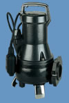
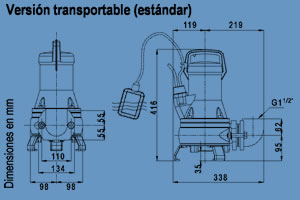
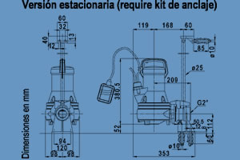
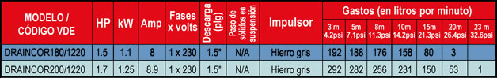
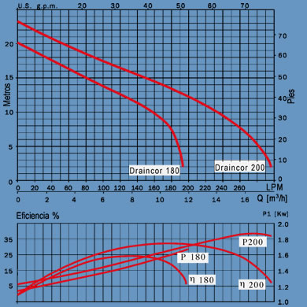

Draincor (con impulsor triturador)
|
 |
 |
| Motor: •Asíncrono, dos polos. •Protección IP 68. •Aislamiento clase F. •Servicio continuo. •Motor refrigerado por agua. •Versión monofásica con protector térmico y cuadro de arranque con doble condensador. |
| DIMENSIONES DRAINCOR |
|---|
 |
 |
MODELOS

Curva DRAINCOR
